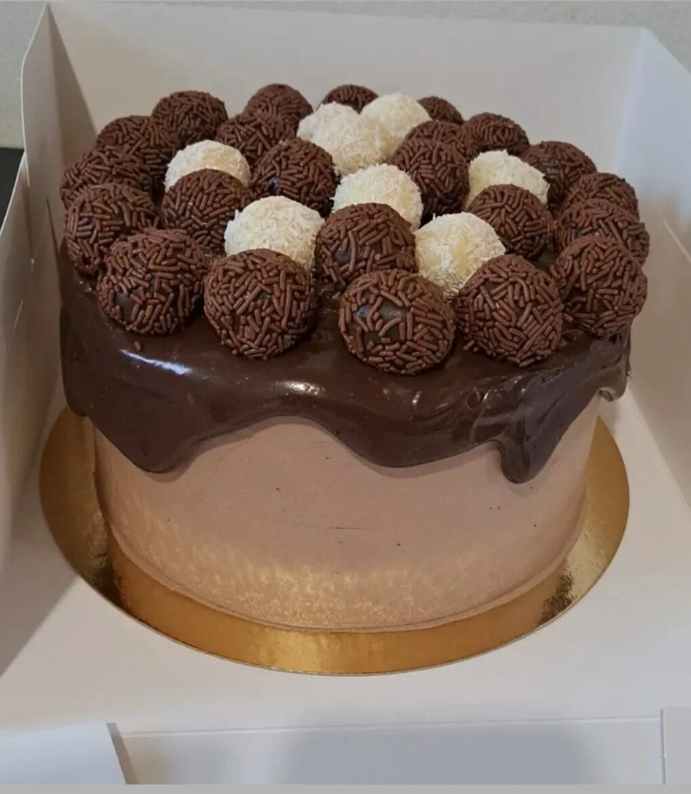
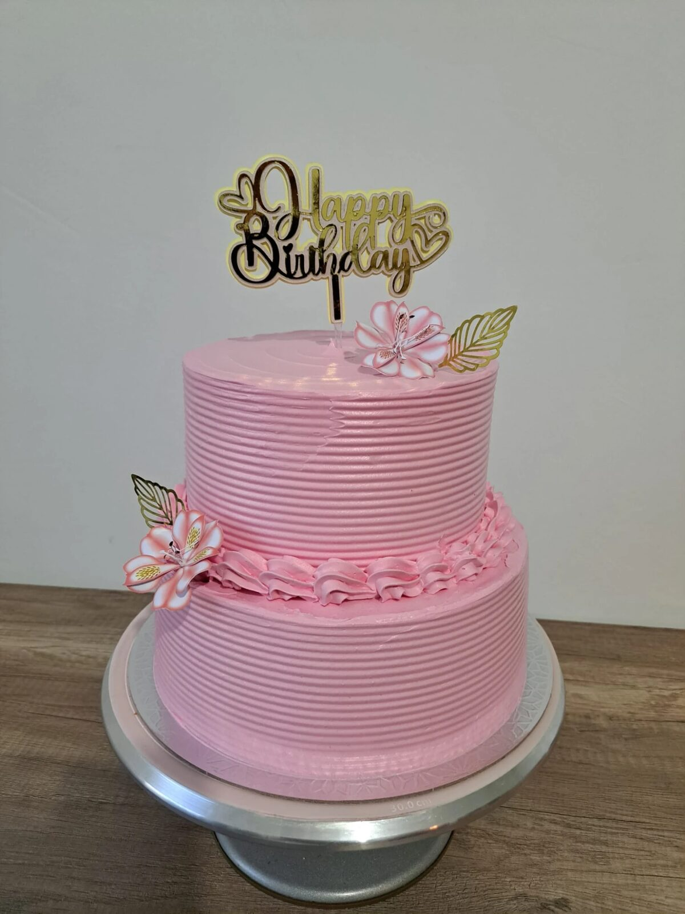
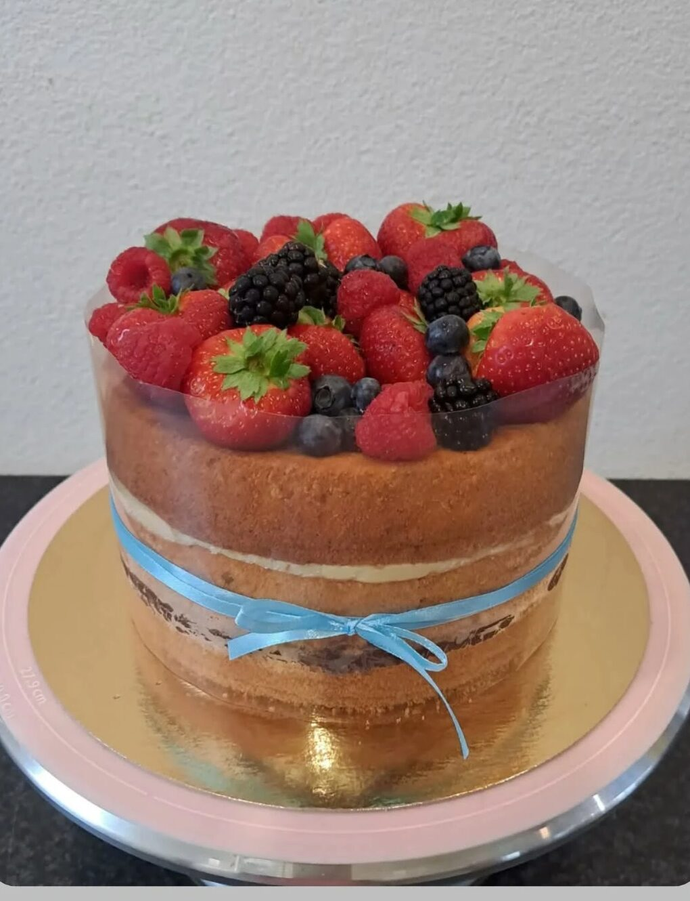
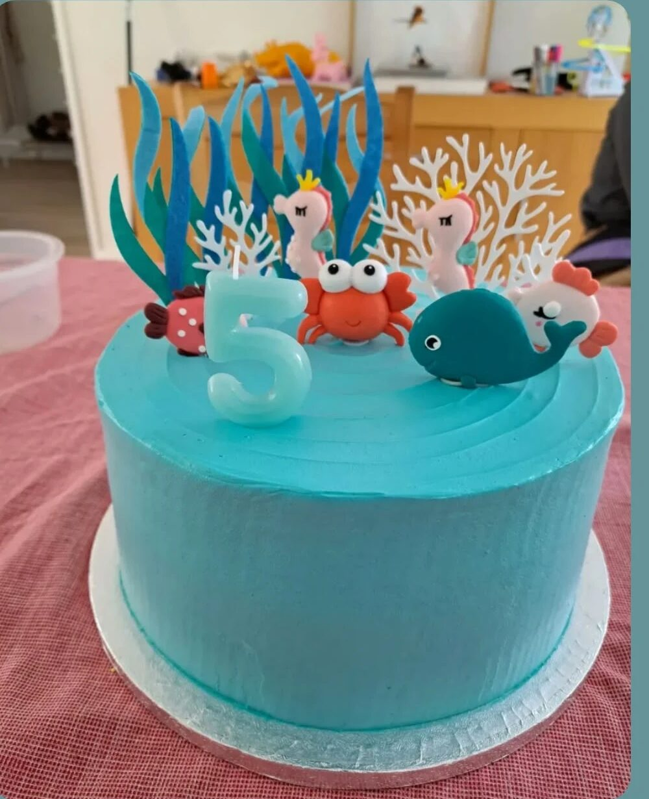
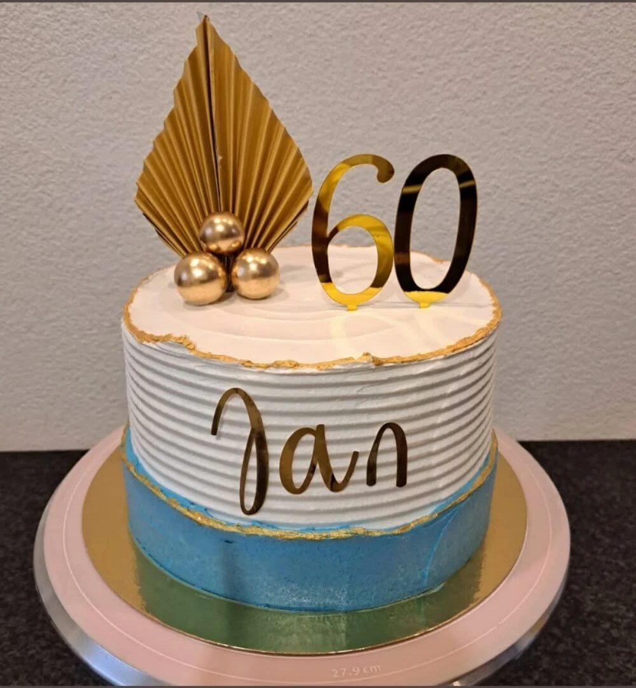
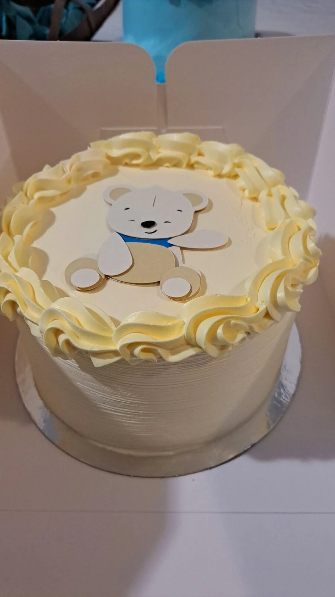
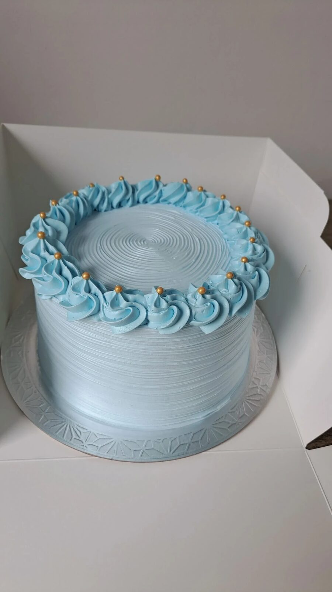
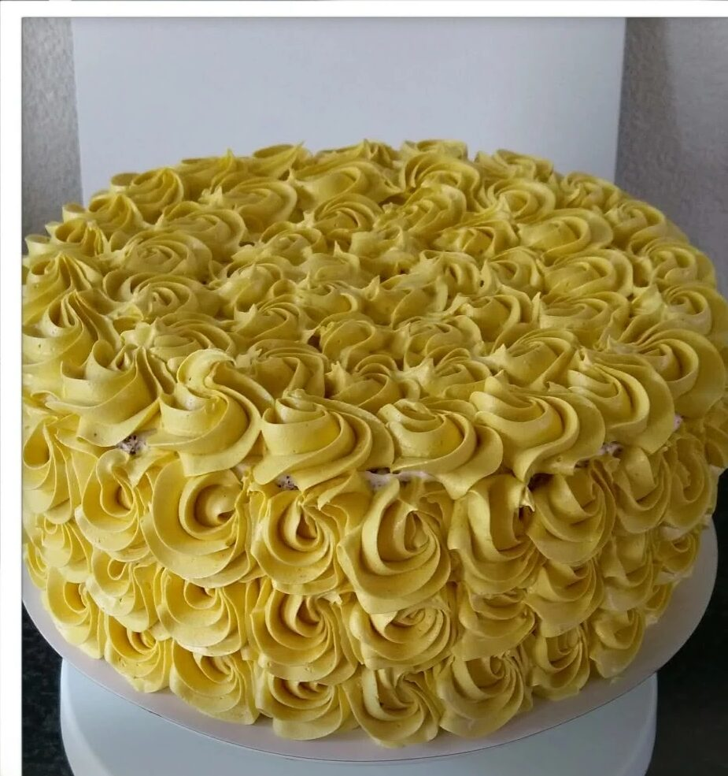

Elke taart van Aina is uniek. Jij kiest de smaak, de kleur en het thema. Zij zorgt dat het eruitziet zoals je het voor je zag, en smaakt zoals je hoopte.








Voor wie, hoeveel personen, welke datum. Stuur gerust een foto of een kleur als inspiratie.
Chocolade met brigadeiro, vanille met rood fruit, kokos, maracujá of doce de leite. Aina denkt met je mee.
Op de afgesproken dag staat de taart klaar. Bezorgen in de regio is op aanvraag mogelijk.
Taarten minimaal één week van tevoren. Voor drukke periodes zoals december en Pasen liever eerder.
Vanaf 8 personen. Tweelaagse taarten vanaf 20 personen. Grotere aantallen voor bruiloften in overleg.
Geef het door bij je aanvraag. Pão de queijo is van nature glutenvrij; voor taarten zijn opties bespreekbaar.
Afhankelijk van formaat, vulling en decoratie. Je krijgt vooraf een duidelijke prijs, zonder verrassingen.